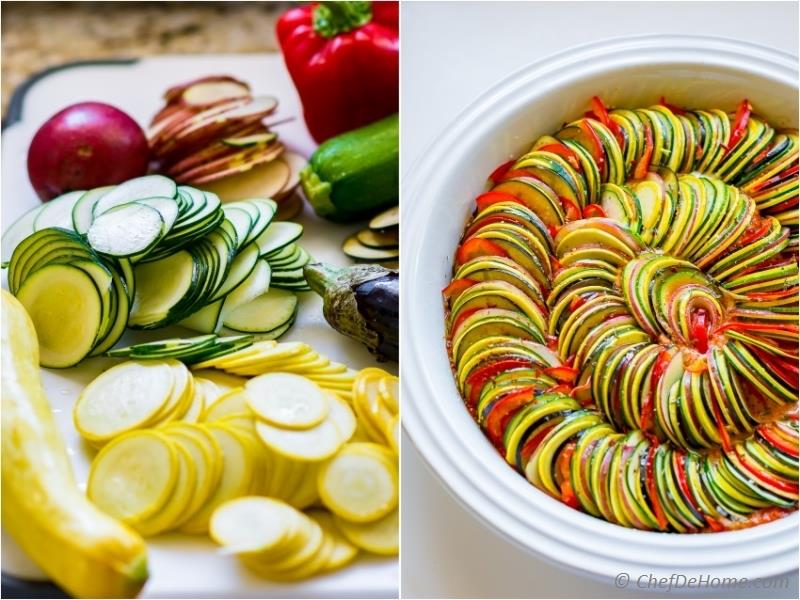

Hvordan lage Ratatouille
Ratatouille er klassisk og fargerikt tilbehør med inspirasjon fra Provence i Frankrike.

Ingredienser
- 1 stk rød paprika
- 1 stk gul paprika
- 1 stk rød løk
- 2 fedd hvitløk
- 1 stk squash
- 1 stk aubergine
- 4 stk tomater
- En neve frisk timian
- 2 never friske basilikumblader
- 0,5 dl parmesan, revet
- Balsamiko
- Salt
- Kvernet pepper
- Olivenolje
Slik gjør du
- Finn frem alle grønnsakene.
- Flå tomatene, fjern kjernen og grovhakk tomatkjøttet. Rens og skjær grønnsakene i jevne biter.
- Varm oljen i en stor panne. Stek løk, paprika, hvitløk til gyllen og myk.
- Hell det over på en tallerken så lenge mens du steker squash og aubergine i samme panne.
- Ha løk og papirblandingen tilbake i pannen og la det hele surre sammen i 10minutter. Tilsett timian underveis.
- Ha tomater og basilikum rett før servering. smak til med noen sråper balsamico, ev. revet parmesan, salt og pepper.